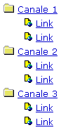

Menu ad albero in JS/CSS
Realizzeremo un menu ad albero sfruttando i CSS e il DOM attraverso il JavaScript. La semplicità del CSS e degli script contrastano con l'efficacia del risultato.Il menu in (X)HTML
Il menu sarà realizzato tramite liste non ordinate tramite i tag ul e li. E' bene ricordare che per creare una sottolista bisogna annidare il tag ul nel tag li secondo il seguente schema:
<ul>
<li>
elemento lista
<ul>
<li>elemento sottolista</li>
</ul>
</li>
</ul>
Il menu utilizzato nell'esempio è realizzato tramite il seguente codice (X)HTML:
<ul>
<li class="menu"><a href="javascript:mmenu('submenu-1')">Canale 1</a>
<ul class="submenu" id="submenu-1">
<li><a href="#">Link</a></li>
<li><a href="#">Link</a></li>
</ul>
</li>
<li class="menu"><a href="javascript:mmenu('submenu-2')">Canale 2</a>
<ul class="submenu" id="submenu-2">
<li><a href="#">Link</a></li>
<li><a href="#">Link</a></li>
</ul>
</li>
<li class="menu"><a href="javascript:mmenu('submenu-3')">Canale 3</a>
<ul class="submenu" id="submenu-3">
<li><a href="#">Link</a></li>
<li><a href="#">Link</a></li>
</ul>
</li>
</ul>
Il menù è realizzato con una lista di tre elementi, ognuno dei quali ha una sottolista di due elmenti. Il livello di annidamento delle liste può essere qualsiasi. Si noti come a tutte le liste costituenti i sottomenu è stata assegnata la classe "submenu" e un identificatore che rappresenti il sottomenu in maniera univoca, ad esempio "submenu-2".
Il codice CSS
Il codice CSS, che per semplicità è stato incluso nel documento tramite il tag style, è di seguito riportato:
ul {
list-style: disc url(doc.gif);
margin:0;padding:0 2em;
}
li.menu { list-style: square url(cartellachiusa.gif); }
Le regole applicate al tag ul indicano che il marcatore di lista deve essere un'icona rappresentante una pagina web (file doc.gif). Agli elementi di una lista che abbiano una sottolista annidata è stata associata la classe menu: <li class="menu"> (vedi il codice (X)HTML utilizzato per realizzare il menu). Tali elementi, associati all'identificatore li.menu, hanno come marcatore di lista un'icona rappresentante una cartella chiusa (file cartellachiusa.gif)
Se non intervenisse il codice JavaScript, ovvero qualora il DOM non fosse sufficentemente supportato (ad esempio Opera 6), il menu apparirebbe come mostrato dalla seguente immagine:
Il codice JavaScript
Il codice JavaScript, anch'esso per semplicità incluso nella pagina di esempio all'interno del tag head, è di seguito riportato:
/* gestione del menu */
function mmenu(ID) {
var menu = document.getElementById(ID);
var display = menu.style.display;
menu.style.display = (display == "block") ? "none" : "block";
menu.parentNode.style.listStyleImage = (display == "block") ? "url(cartellachiusa.gif)" : "url(cartellaaperta.gif)";
}
/* inizializzazione del menu */
window.onload = function() {
var uls = document.getElementsByTagName("ul");
for (i=0;i<uls.length;i++) {
if(uls[i].getAttribute("class")=="submenu")uls[i].style.display = "none";
if(uls[i].getAttribute("id") && uls[i].getAttribute("id").search("submenu-")!= -1) uls[i].style.display = "none";
}
}
Analizziamo il codice cominciando dall'inizializzazione del menu. Quando la pagina viene caricata, nella variabile uls viene memorizzato un array contenente tutti i tag ul. Ogni elemento dell'array viene analizzato per vedere se si tratta di un sottomenu e, in caso affermativo, si imposta la proprietà display su none tramite l'istruzione uls[i].style.display = "none". Per contrallere se un elento di uls sia o no un sottomenu è sufficiente controllare il valore dell'attributo class tramite l'istruzione uls[i].getAttribute("id"). Purtroppo sembra che con Internet Explorer (ver. 6.0) tale istruzione restituisca sempre il valore nullo. Avendo assegnato a tutti gli identificatori dei sottomenu il prefisso "submenu-" potremmo utilizzare uls[i].getAttribute("id").search("submenu-") in luogo di uls[i].getAttribute("id"). Sembra però che tale istruzione non permetta il corretto funzionamento con Mozilla (1.0). La soluzione adottata (vedi codice precedentemente riportato) permette il funzionamento sia con Internet Explorer sia con Mozilla.
La funzione mmenu(mID) si occupa di mostrare o nascondere il settomenu associato all'identificatore mID. Innanzitutto la funzione memorizza nella variabile menu il sottomenu associato all'identificatore mID e ne memorizza lo stato (nascosto o visibile) nella variabile display. Se il sottomenu è visibile, il menu viene nascosto impostando il valore none per la proprietà display del sottomenu, altrimenti il menu viene mostrato impostando il valore block per la stessa proprietà.
menu.style.display = (display == "block") ? "none" : "block";
Inoltre viene modificata l'immagine utilizzata come marcatore di lista dall'elemento parent (li) del sottomenu corrente, scegliendo l'immagine della cartella chiusa ovvero quella della cartella aperta.
menu.parentNode.style.listStyleImage = (display == "block") ? "url(cartellachiusa.gif)" : "url(cartellaaperta.gif)";
La funzione mmenu(mID) viene invocata attivando un link:
<li class="menu"><a href="javascript:mmenu('submenu-1')">Canale 1</a>...</li>
Implementazione
L'implementazione del menu è molto semplice. Innanzitutto bisogna inserire nella pagina i codici CSS e Javascript proposti, meglio se attraverso file esterni.
nel documento (X)HTML è sufficiente creare una lista con sottoliste. Se un elemento della lista prevede sottoliste bisogna associarlo alla classe "menu" ed aggiungere il link per la gestione del sottomenu: <a href="javascript:mmenu('submenu-NOME')">Apri il sottomenu</a>, dove submenu-NOME è l'identificatore del sottomenu associato al link:
<li class="menu"><a href="javascript:mmenu('submenu-1')">Canale 1</a>
<ul class="submenu" id="submenu-1">
[...]
</ul>
</li>
Infine bisogna associare i vari sottomenu alla classe "submenu" e assegnare loro l'identificatore "submenu-NOME".
File correlati
Articoli correlati:
Strumenti

{kind=link}
{kind=link}

.ConStile è disponibile anche in XML.
Some Rights Reserved. This work is licensed under a Creative Commons License.